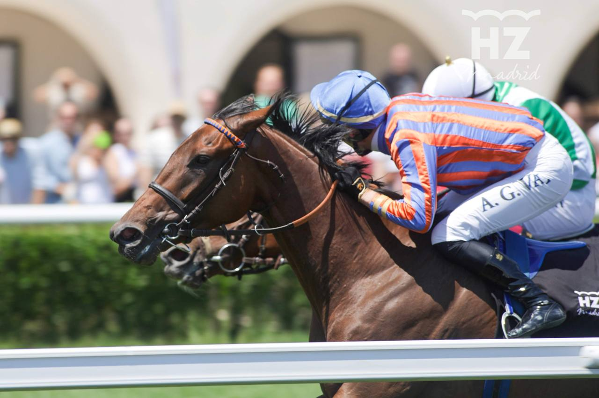

El Derby Nacional abre este domingo la temporada de grandes premios en La Zarzuela
El Hipódromo de La Zarzuela da el pistoletazo de salida a junio, mes estrella del turf español, con el Derby Nacional para productos de tres años este domingo 8.

El Hipódromo de La Zarzuela vive este domingo 8 de junio una de las jornadas más esperadas del calendario hípico nacional. El Derby Nacional, prueba emblemática reservada a productos de tres años, inaugurará oficialmente la temporada de grandes premios que caracteriza al mes de junio en el turf español.
Esta clásica, una de las más prestigiosas del circuito nacional, marca el inicio de un período en el que La Zarzuela concentra las principales citas de la temporada. El Derby representa la primera gran prueba de madurez para la generación de tres años, caballos que llegan a esta distancia tras meses de preparación específica y que buscan consagrarse en una carrera que ha coronado a algunas de las mayores figuras del turf patrio.
La expectación es máxima entre aficionados y profesionales, que verán desfilar por la pista madrileña a los ejemplares más prometedores de la cosecha actual. El Derby no solo abre la temporada grande de junio, sino que sirve como termómetro del nivel de la generación y anticipa el resto de grandes compromisos que definirán la campaña. La Zarzuela se prepara para recibir al público en una jornada que combina tradición, emoción deportiva y la pasión por las carreras de caballos.
— Redacción de Hípica al Día